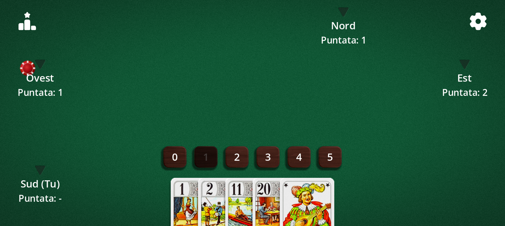
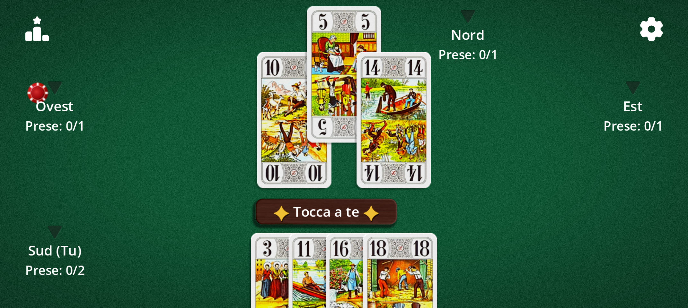
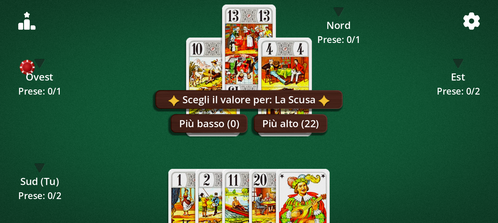
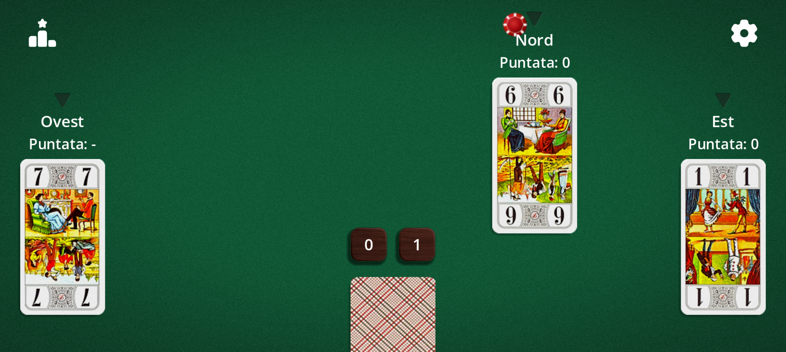

Un gioco di prese in cui non vince chi fa più prese, ma chi prevede meglio. 22 carte, 3-5 giocatori, partite veloci.
Il Tarot Africain è noto anche come Whist 22. È un cugino dell'«Oh Hell» e si gioca con i 22 trionfi dei tarocchi. La variante alla messicana è detta anche Tarot messicano.
Le carte
Il Tarot Africain si gioca con sole 22 carte: i 21 trionfi, numerati da 1 a 21, e l'Excuse. Non ci sono semi: conta solo il valore della carta per vincere la presa.
Carta
Valore
Trionfi da 1 a 21
Il proprio numero (21 è il più alto, escluso l'Excuse)
L'Excuse
0 o 22, a scelta di chi la gioca
L'1, il 21 e l'Excuse sono tradizionalmente le carte più preziose: giocale al momento giusto e tienile d'occhio negli avversari.
Obiettivo
A ogni mano annunci quante prese pensi di fare. Il tuo obiettivo: farne esattamente quel numero. Una puntata riuscita ti salva; una sbagliata costa vite, tanto più quanto è grande lo scarto.
La partita finisce quando resta un solo giocatore con delle vite. Puoi anche fissare un numero limitato di mani.
Le puntate
Prima di ogni mano, ogni giocatore annuncia a turno un numero di prese da 0 a 5. Non si può passare.
Di default l'ultimo a puntare non può scegliere il numero che renderebbe la somma delle puntate pari al numero di prese: c'è sempre almeno un perdente.

Fase di puntata: scegli da 0 a 5 prese. La puntata vietata è disattivata.
Svolgimento
Al tuo turno gioca una carta qualsiasi della tua mano: nessun obbligo di rispondere al seme. La carta più alta vince la presa.
Il numero di carte distribuite scende a ogni mano, come una scala, fino a 1 carta per giocatore (5 carte con 4 giocatori, 6 con 3, 4 con 5).

Una presa in corso: «Prese: 0/1» significa 0 vinte su 1 annunciata.
L'Excuse
Giocando l'Excuse, scegli sul momento se vale 0 (la più bassa) o 22 (più alta del 21).

Quando giochi l'Excuse, scegli 0 o 22.
Vite e punteggio
Ogni giocatore parte con le vite stabilite dall'obiettivo: 14 vite per «Dal re all'asso» (il conteggio mostra Re, Dama, Cavallo, Fante… fino all'Asso), oppure 5, 10, 15, 20, 30 o 50.
La classifica mostra le vite rimaste dopo ogni mano. A 0 il giocatore è eliminato.
Varianti
Tutto si regola nelle Opzioni del gioco:
Variante
Effetto
Alla messicana (tarot messicano)
Mano da 1 carta: la tua è nascosta, quelle degli avversari sono visibili.
Alla cieca
Mano da 1 carta: nessuna carta visibile, nemmeno la tua.
Obbligo di salire
Giocare una carta più alta di quella della presa, se possibile (esclusa l'Excuse).
Doppio 20
Se il 20 e il 21 cadono nella stessa presa, vince la carta più bassa.
Regola dell'Excuse
Variabile (0 o 22), zero d'ufficio (perde sempre) o super 22 (batte il 21).
Excuse prima dell'ultima presa
L'Excuse va giocata prima dell'ultima presa.
Senza Excuse
Partita a 21 carte.
Puntata vietata
Attiva o disattiva il divieto per l'ultimo giocatore di pareggiare il totale.
Obiettivo e mani
Dal re all'asso o da 5 a 50 punti; partita illimitata o da 1 a 50 mani.
Senso e primo a puntare
Orario o antiorario; primo a caso, ultimo (facile) o primo (difficile).

Mano «alla messicana»: vedi le carte degli altri, non la tua.